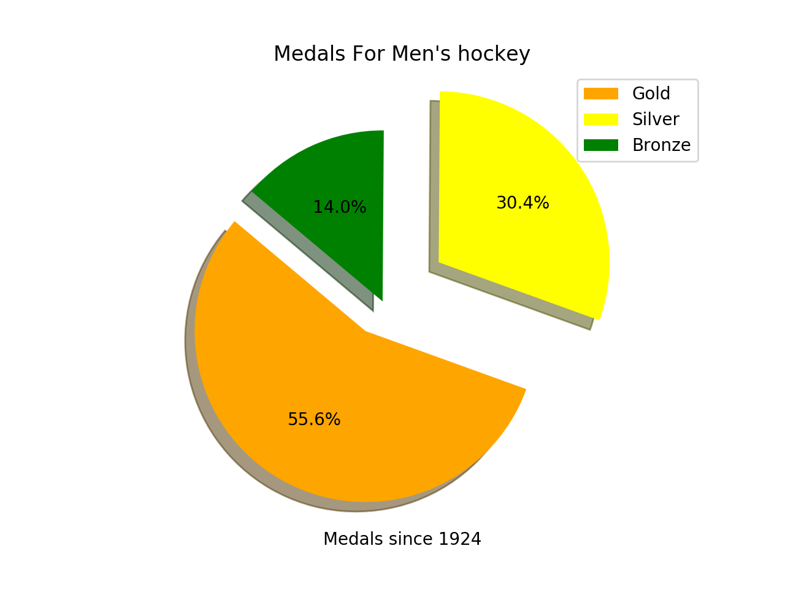
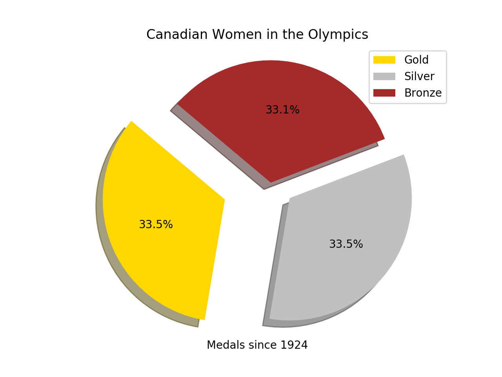
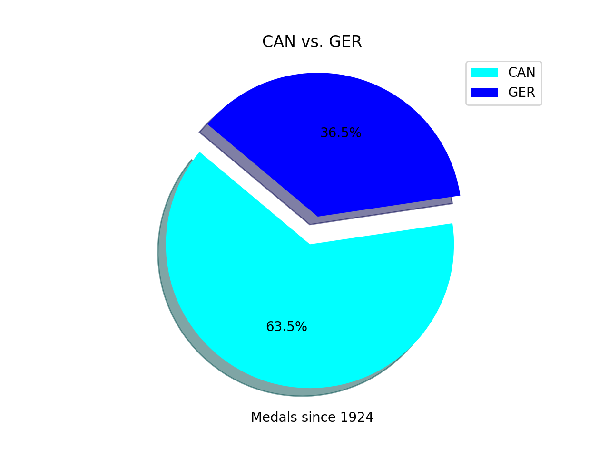
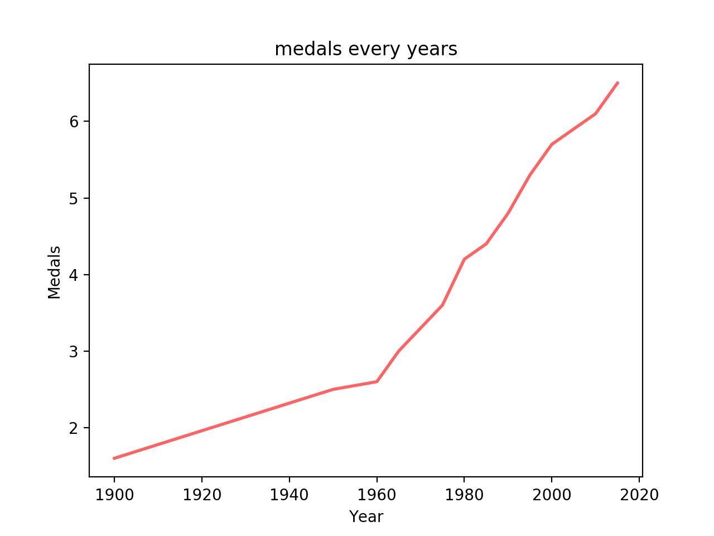
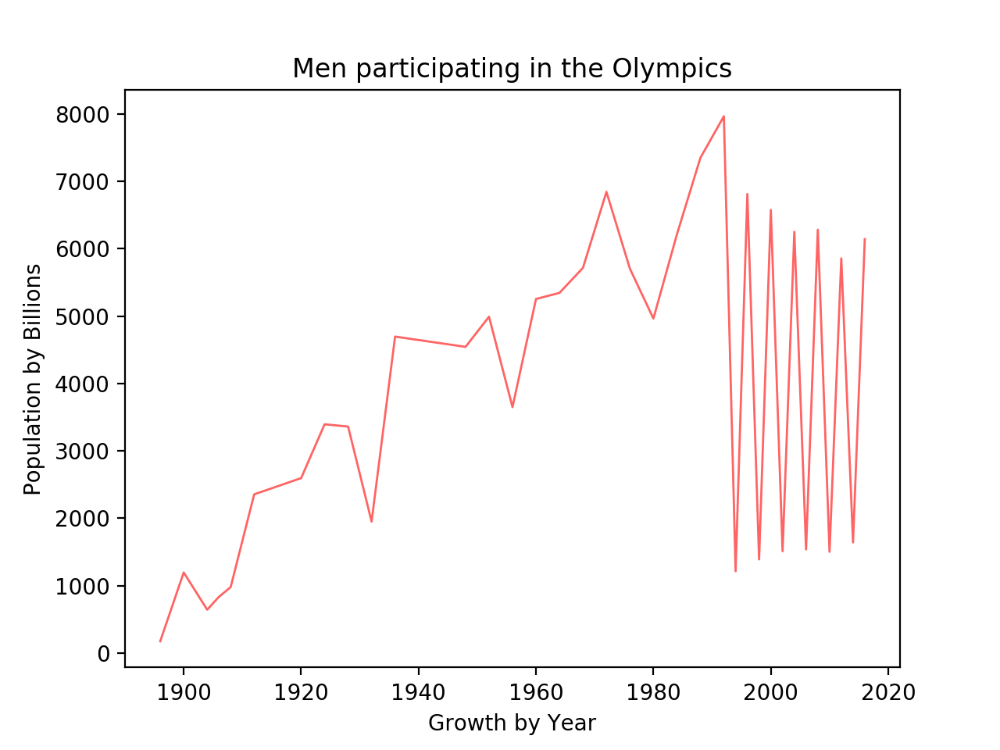
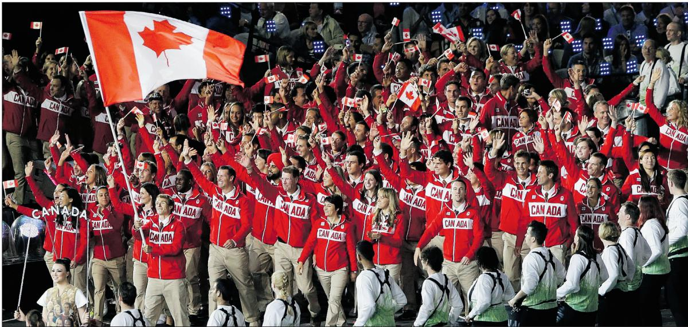

for more stats, keep reading...
Men Hockey

The team is overseen by Hockey Canada, a member of the International Ice Hockey Federation. From 1920 until 1963, Canada's international representation was by senior amateur club teams. Canada's national men's team was founded in 1963 by Father David Bauer as a part of the Canadian Amateur Hockey Association, playing out of the University of British Columbia.
Women Olympics

Ultimately, another Olympic medal is the target for the Canadians. It is a realistic goal but there is a long road ahead, and more players in the game before they march proudly into the Olympics.
Canada Vs Germany

The two countries have faced each other only once before in Olympic play since the fall of the Iron Curtain and the reunification of Germany, and the Germans won that game 4-2 in 1994 at Lillehammer, Norway. Before that, the Soviet Union team had been 4-0 against West Germany on Olympic ice.
Medals

n total, Canada has won 199 medals at the Olympic Winter Games: 73 gold, 64 silver and 62 bronze medals. This does not include the gold medal in ice hockey won by Canada at the 1920 Olympic Games; while considered the first Olympic medal in ice hockey, it preceded the establishment of the Olympic Winter Games.
Men Medals

Canada sent a team of 206 athletes,116 men, including participants in all 15 sports, and finished with 14 gold medals and 26 in total (ranking 1st and 3rd respectively), surpassing their previous best medal performance at the 2006 Winter Olympics.[3] The 14 gold medals also set the all-time record for most gold medals at a single Winter Olympics, one more than the previous record of 13 set by the former Soviet Union in 1976 and Norway in 2002.[4] Canada was the first host nation to win the gold medal count at a Winter Olympics since Norway at the 1952 Winter Olympics.

check out this cool video of canadas olympics opening ceremony
click me